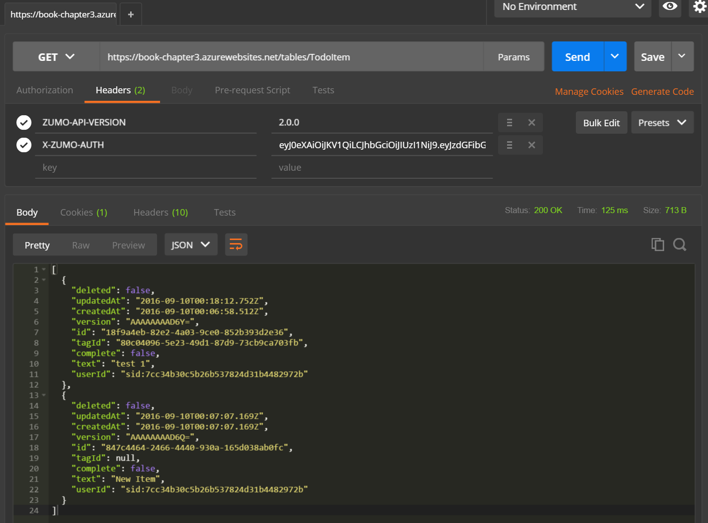
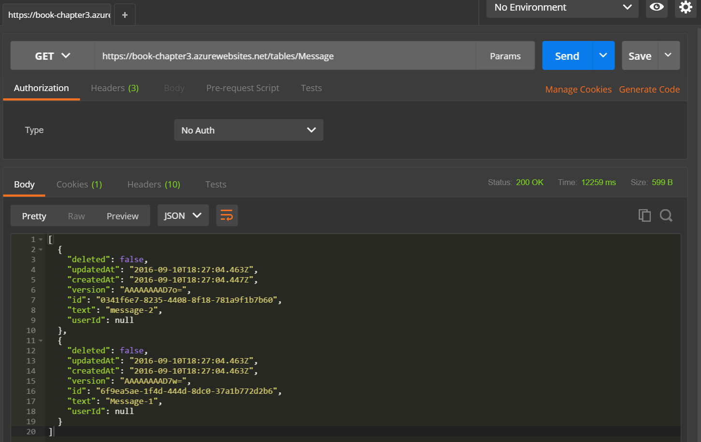
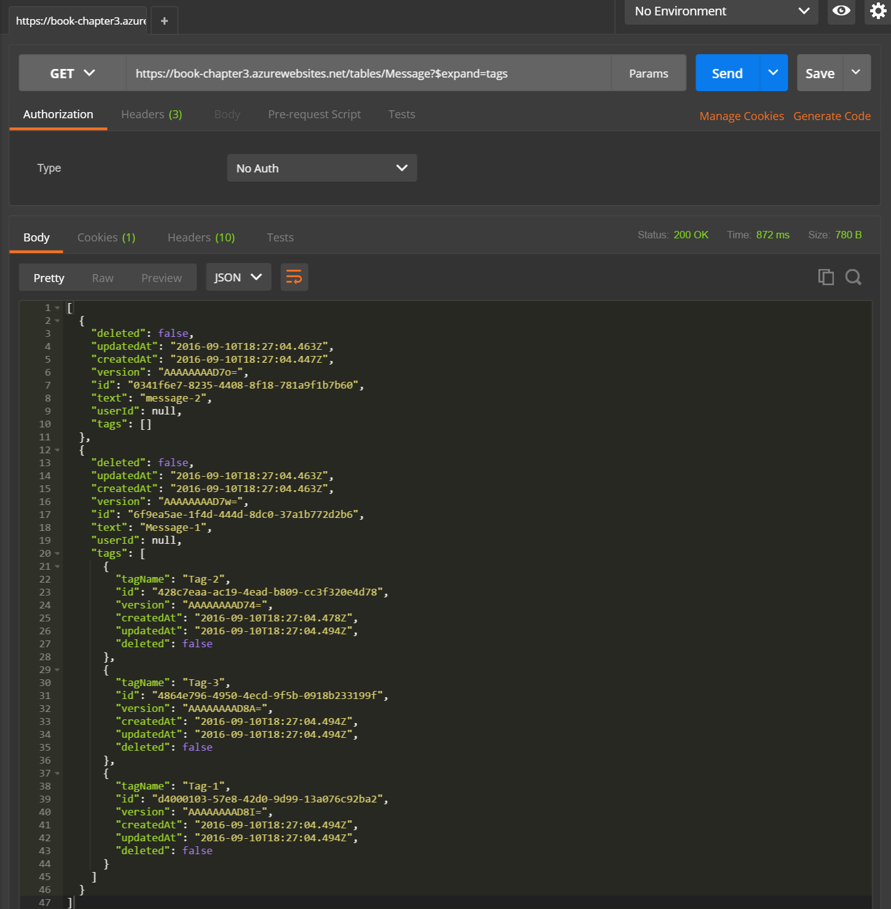

Relationships¶
One of the biggest benefits to using a SQL database over a NoSQL store is relationships between entities. Relationships provide the ability to normalize the data, allowing you to store the minimal amount of data for a specific use case on the mobile device. This reduces bandwidth usage and memory usage on the device. Relationships are a good thing.
Unfortunately, relationships between tables are hard when one is working within an offline context. This is primarily caused by the need for resilience. Because we can do many updates to the tables on the offline client, the transactions that update the tables need to be co-ordinated. This is practically impossible in an offline context where one of the goals in bandwidth performance.
Azure Mobile Apps, when used in an offline context, has an operations table. As you do each operation against a table, an entry is made in the operations table. The operations table is then replayed in order to the mobile backend to effect changes in the remote database. However, this also has the effect that we do not have transactions to allow the updating of multiple tables within the database at the same time. Each record in each table is updated individually. The push process that offline sync uses has major ramifications for how relationships between tables work. Specifically, only 1-way relationships will work in an offline sync world.
1-Way Relationships
You can define relationships in Entity Framework with or without a virtual back-reference. Relationships without the virtual back-reference are known as 2-way relationships (because you can get back to the original model). Relationships with only a forward reference (and no knowledge of the original model) are said to have a 1-way relationship. A database model with only 1-way relationships can generally be represented with a tree structure.
Let's take a quick example. We've been using the "task list" scenario for our testing thus far. Let's say that each task could be assigned a tag from a list of tags. We can use a 1-way 1:1 relationship between the tasks and the tags. To do that, we would store the Id of the tag in the task model. If, however, we could attach many tags to a single task, that would be a 1:Many relationship.
1:1 Relationships¶
Let's take a look at our task list example, from the perspective of the models on the server side:
using Microsoft.Azure.Mobile.Server;
using System.ComponentModel.DataAnnotations.Schema;
namespace ComplexTypes.DataObjects
{
public class Tag : EntityData
{
public string TagName { get; set; }
}
public class TodoItem : EntityData
{
public string Text { get; set; }
public bool Complete { get; set; }
#region Relationships
public string TagId { get; set; }
[ForeignKey("TagId")]
public Tag Tag { get; set; }
#endregion
}
}
1:1 relationships are defined using a foreign key in the SQL database. We can use Entity Framework to define the foreign
key relationship easily. In this case, our TodoItem model will, have a TagId that contains the Id field of the tag. I
also created a pair of table controllers for these models in the normal manner. Finally, I've created some records using
the Seed() method within the App_Start\Startup.MobileApp.cs file to give us some test data.
If we take a look at records through Postman, we will get the following:

Note that the first item has a reference to a tag, by virtue of the TagId. The second item does not have a tag assigned, so the value of TagId is null.
When we implement the client, we are going to download these tables indepdendently. The linkage and relationships between the tables is lost when going from the backend to the offline client. We have to link them together ourselves. This is why the "1-way" relationship is necessary. In a 2-way relationship, a tag and task would have to be created at the same time as part of an SQL transaction. In a 1-way relationship, the tag can be created THEN the task that has the relationship is created
Tip
When you think of all the mobile applications you own, you will realize that 1-way relationships are the normal state of affairs. Very few data models for mobile apps actually require a two-way relationship.
When you are developing the mobile client, the Tag is removed from the model:
using TaskList.Helpers;
namespace TaskList.Models
{
public class Tag : TableData
{
public string TagName { get; set; }
}
public class TodoItem : TableData
{
public string Text { get; set; }
public bool Complete { get; set; }
public string TagId { get; set; }
}
}
One can easily retrieve the tag information with a LINQ query on the Tag table:
var tag = tagTable.FirstOrDefault(tag => tag.Id.Equals(task.TagId)).Value;
There are a couple of rules you must follow within your client code:
- You need to ensure that you create a tag before associating that tag with a task.
- You need to store the TagId with the task, not the
Tagobject (as you would normally do within Entity Framework).
The former is generally handled for you. If you InsertAsync a tag in offline mode, it will be placed into the
operations queue prior to anything that uses it. Since the operations queue is processed in order, the tag will
be sent to the backend prior to any record updates that would use it.
1:Many Relationships¶
What if we had a list of messages and wanted to assign more than one tag to each record? In this case, we would need a 1:Many relationship. Setting up a 1:Many relationship on the backend again relies on Entity Framework syntax:
using Microsoft.Azure.Mobile.Server;
using System.Collections.Generic;
namespace TaskList.Models
{
public class Tag : EntityData
{
public string TagName { get; set; }
}
public class Message : EntityData
{
public string UserId { get; set; }
public string Text { get; set; }
public virtual ICollection<Tag> Tags { get; set; }
}
}
We can seed some information into this database to simulate relationships with a standard initializer:
public class MobileServiceInitializer : CreateDatabaseIfNotExists<MobileServiceContext>
{
protected override void Seed(MobileServiceContext context)
{
List<Tag> tags = new List<Tag>
{
new Tag { Id = NewGuid(), TagName = "Tag-1" },
new Tag { Id = NewGuid(), TagName = "Tag-2" },
new Tag { Id = NewGuid(), TagName = "Tag-3" }
};
context.Set<Tag>().AddRange(tags);
List<Message> messages = new List<Message>
{
new Message { Id = NewGuid(), Text = "Message-1", Tags = tags },
new Message { Id = NewGuid(), Text = "message-2", Tags = new List<Tag>() }
};
context.Set<Message>().AddRange(messages);
base.Seed(context);
}
private string NewGuid()
{
return Guid.NewGuid().ToString();
}
}
If we use Postman to do a GET /tables/Message, we get the following:

Note that the tags field is not even produced. The Azure Mobile Apps Server SDK depends on multiple frameworks. It
uses Entity Framework for data access, for instance. It also uses the standard Microsoft OData server to translate
OData queries into results. This has a side effect that the rules of the Microsoft OData server must be followed.
Specifically, this means that collections, such as the list of tags, will not be produced unless you explicitly expand
them. You can do this on the URL by using the $expand parameter:
GET /tables/Message?$expand=tags
This will result in the following output:

Note that the tags are fully expanded and embedded in the object. This has some serious consequences that must be considered:
- The table becomes read-only through the controller. Inserts, Updates and Deletes must have special code handling.
- The data takes up more space on the client as the tags will be duplicated whenever used.
- You cannot use offline sync since the data model is no longer flat.
In addition to these three points, you need to be able to add the $expand property to the request. This is not done
by the SDK. You can automatically add the $expand property on the server-side by using an attribute for the purpose:
using System;
using System.Linq;
using System.Web.Http.Controllers;
using System.Web.Http.Filters;
namespace Chapter3.Extensions
{
[AttributeUsage(AttributeTargets.Method, AllowMultiple = true)]
public class ExpandPropertyAttribute : ActionFilterAttribute
{
string propertyName;
public ExpandPropertyAttribute(string propertyName)
{
this.propertyName = propertyName;
}
public override void OnActionExecuting(HttpActionContext actionContext)
{
base.OnActionExecuting(actionContext);
var uriBuilder = new UriBuilder(actionContext.Request.RequestUri);
var queryParams = uriBuilder.Query.TrimStart('?').Split(new[] { '&' }, StringSplitOptions.RemoveEmptyEntries).ToList();
int expandIndex = -1;
for (var i = 0; i < queryParams.Count; i++)
{
if (queryParams[i].StartsWith("$expand", StringComparison.Ordinal))
{
expandIndex = i;
break;
}
}
if (expandIndex < 0)
{
queryParams.Add("$expand=" + this.propertyName);
}
else
{
queryParams[expandIndex] = queryParams[expandIndex] + "," + propertyName;
}
uriBuilder.Query = string.Join("&", queryParams);
actionContext.Request.RequestUri = uriBuilder.Uri;
}
}
}
This is used in the controller:
public class MessageController : TableController<Message>
{
private MobileServiceContext context;
protected override void Initialize(HttpControllerContext controllerContext)
{
base.Initialize(controllerContext);
context = new MobileServiceContext();
DomainManager = new EntityDomainManager<Message>(context, Request);
}
public string UserId => ((ClaimsPrincipal)User).FindFirst(ClaimTypes.NameIdentifier).Value;
// GET tables/Message
[ExpandProperty("tags")]
public IQueryable<Message> GetAllMessage()
{
return Query();
//return Query().OwnedByFriends(context.Friends, UserId);
}
// GET tables/Message/48D68C86-6EA6-4C25-AA33-223FC9A27959
[ExpandProperty("tags")]
public SingleResult<Message> GetMessage(string id)
{
return new SingleResult<Message>(Lookup(id).Queryable);
//return new SingleResult<Message>(Lookup(id).Queryable.OwnedByFriends(context.Friends, UserId));
}
// POST tables/Message
public async Task<IHttpActionResult> PostMessageAsync(Message item)
{
item.UserId = UserId;
Message current = await InsertAsync(item);
return CreatedAtRoute("Tables", new { id = current.Id }, current);
}
}
Given this is not recommended, what are the alternatives? There are two alternatives. The first alternative is to use a third table that joins the Messages and Tags together in a loose manner:
using Microsoft.Azure.Mobile.Server;
using System.Collections.Generic;
namespace TaskList.Models
{
public class Tag : EntityData
{
public string TagName { get; set; }
}
public class Message : EntityData
{
public string UserId { get; set; }
public string Text { get; set; }
}
public class MessageTag : EntityData
{
public string MessageId { get; set; }
public string TagId { get; set; }
}
}
We can now create a MessageTagController to retrieve the information. This data can be stored offline since the model
is now flat. Obtaining the list of tags for a message is a single LINQ query:
var tags = from tag in tagTable
let tl = (from mt in messageTags where mt.MessageId == messageId select mt.TagId)
where tl.Contains(tag.Id)
select tag;
You may recognize this LINQ query as it is very similar to the LINQ query used for the friends filter. A similar query can be used to find the messages associated with a tag:
var msgs = from message in messageTable
let tl = (from mt in messageTags where mt.TagId == tagId select mt.MessageId)
where tl.Contains(message.Id)
orderby message.CreatedAtRoute
select message;
The second alternative is to use an alternative DomainManager that implements the relationships for you. We will cover this in the next section.